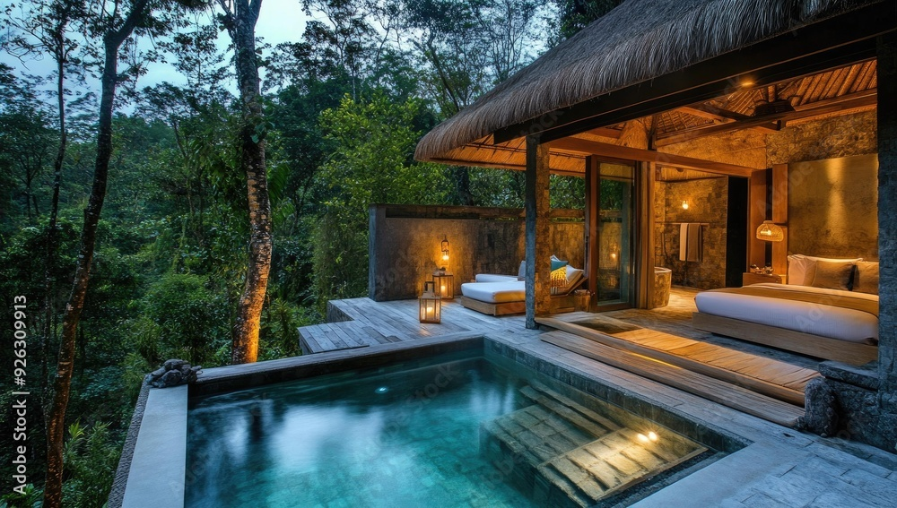
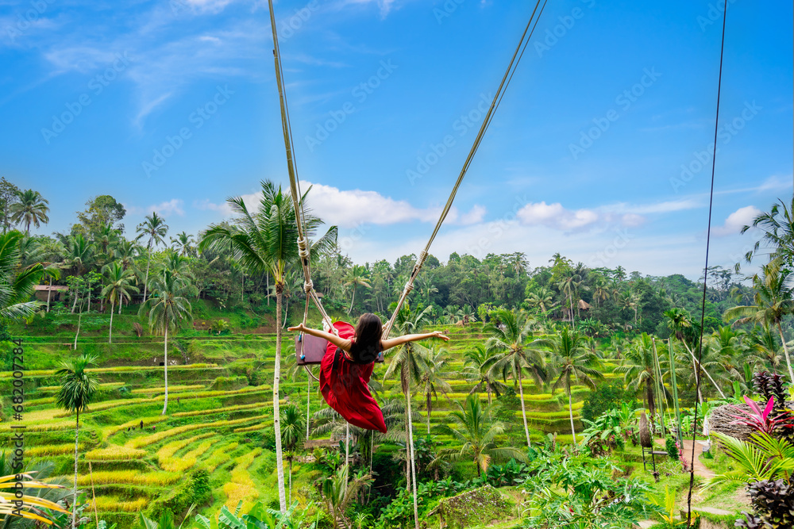
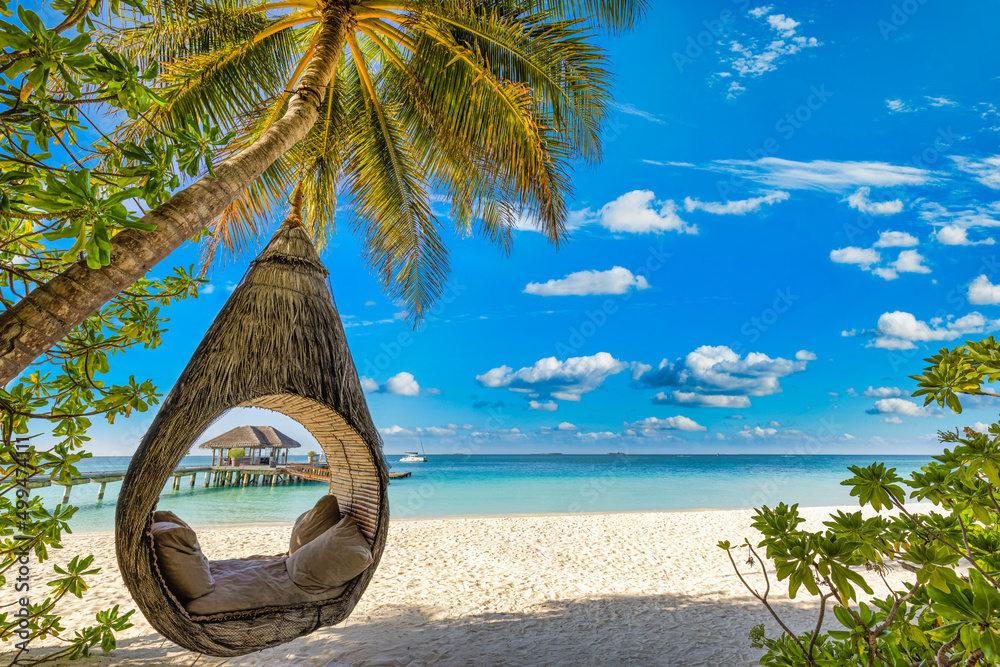
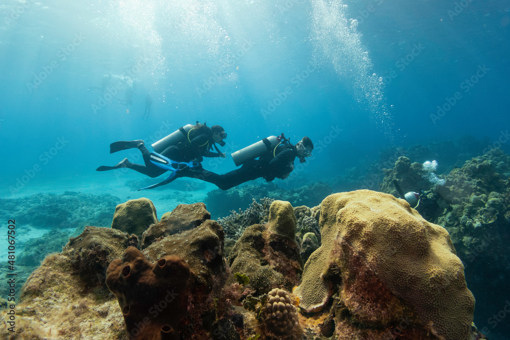
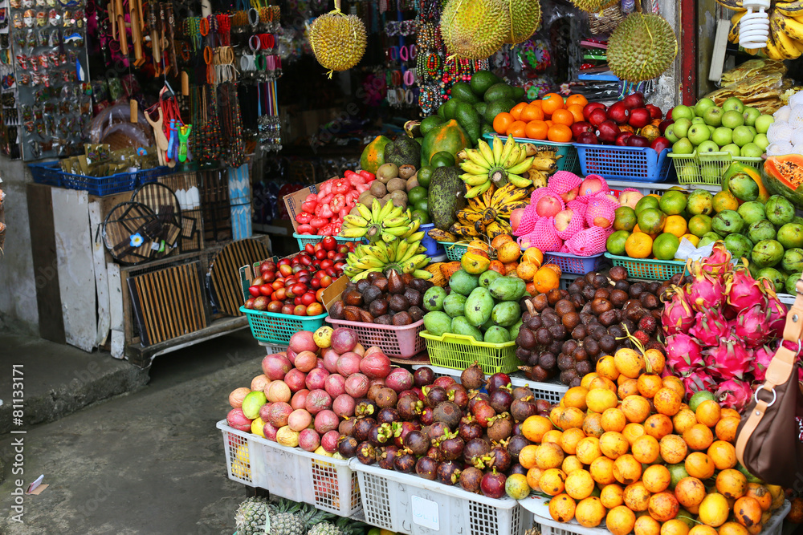

Programme de Séjour
- Jour 1 : [Tunis / Bali]
RDV à l’aéroport et embarquement à destination de Bali sur vol Régulier. Arrivée à l’aéroport de Dubaï. Temps d’escale et reprise de vol vers BALI. - Jour 2 : [Arrivée à Bali]
Arrivée à l’aéroport international DENPASAR (BALI), rassemblement du groupe et départ de l’aventure en bus vers notre première station UBUD.
Arrivée et Check in à l’hôtel Sthala, A Tribute Portfolio Hotel, Ubud 4****
Retour à l’hôtel et soirée libre - Jour 3 : [Ubud : BIG SHOW] Petit déjeuner à l’hôtel et matinée libre pour découverte des alentours, repos et relaxation. L’après-midi, départ au centre d’Ubud pour assister à un spectacle de danse traditionnelle au théâtre local, suivi d’un dîner dans un restaurant typiquement Asiatique
- Jour 4 : [Ubud / Kuta]:
Petit déjeuner et check out à l’hôtel, départ vers Kuta ; en route, on va s’arrêter au village de Celuk & Mas pour découvrir l'artisanat Balinais.
Arrivée à notre Hôtel The Vira Bali Hôtel 4 * de luxe, répartition des chambres. Soirée libre et nuitée. - Jour 6 : [Journée libre à kuta]
Petit déjeuner à l’hôtel, Journée libre pour repos et relaxation.
Soirée libre et nuitée. - Jour 6 : [Découverte des Champs de riz]:
Petit déjeuner à l’hôtel, Départ pour une excursion aux champs de riz de Tegalalang, découverte du fameux Kintamani ou vous pouvez visualiser la beauté magique de la nature, la vue du volcan et le reflet de la lumière du lac Batur. Après, déjeuner dans un restaurant balinais avec vue sur le mont Batur . Continuation de l’excursion vers Tampaksiring, l’eau bénite et le centre d’Ubud, marché d'art traditionnel et le palais d'Ubud…
Retour à l'hôtel et soirée libre. - Jour 7 : [Les Cascades de Bali avec déjeuner]
Petit déjeuner à l’hôtel, Départ pour une excursion vers le nord de Bali pour découvrir les cascades d’eaux ; visite de Bedugul Highland ; expérience unique et inoubliable pour découvrir le Volcan, et Beratan Lake. Pause Déjeuner et continuation vers le fameux Tanah Lot Temple et sea temple, temps libre pour prise des photos.
Retour à l’hôtel, Soirée libre et nuitée. - Jour 8: [Uluwatu]
Petit déjeuner, Mâtiné libre.
L’après-midi départ vers Uluwatu pour assister au plus beau coucher de soleil à Bali avec cocktails à la falaise d’Uluwatu, un moment magique, suivi d’un show Kechak avec une dizaine des danseurs dans le cadre d’un festival de music et de dance traditionnel. Continuation vers Jimbaran, le village des pécheurs ; régalez-vous par les délices de l’océan indien, et gâtez-vous par un diner spécial dans un restaurant local de fruits de mer. - Jour 9 : [Bali / Dubai]
Petit déjeuner à l’hôtel, mâtiné libre, cheek out à midi et remise des clés.
L’Après-midi, transfert en bus vers un espace commercial pour shopping et derniers achats, temps libre pour un dinner avant départ à l’aéroport.
Le soir, transfert à l’aéroport de Bali et embarquement à destination de Tunis via Vol Régulier.
Découvrez la Turquie en images





Tarif & Réservation
Tarifs
| Désignation | Sous-total |
|---|---|
| Chambre Double | 7300DT |
| Chambre Single | 8300DT |
| Enfant( 2 / - 06 ans) partageant chambres avec les parents (sans lit supplémentaire) | 5500DT |
| Enfant (+ 06 / - 12 ans) partageant chambres avec les parents (sans lit supplémentaire) | 6300DT |